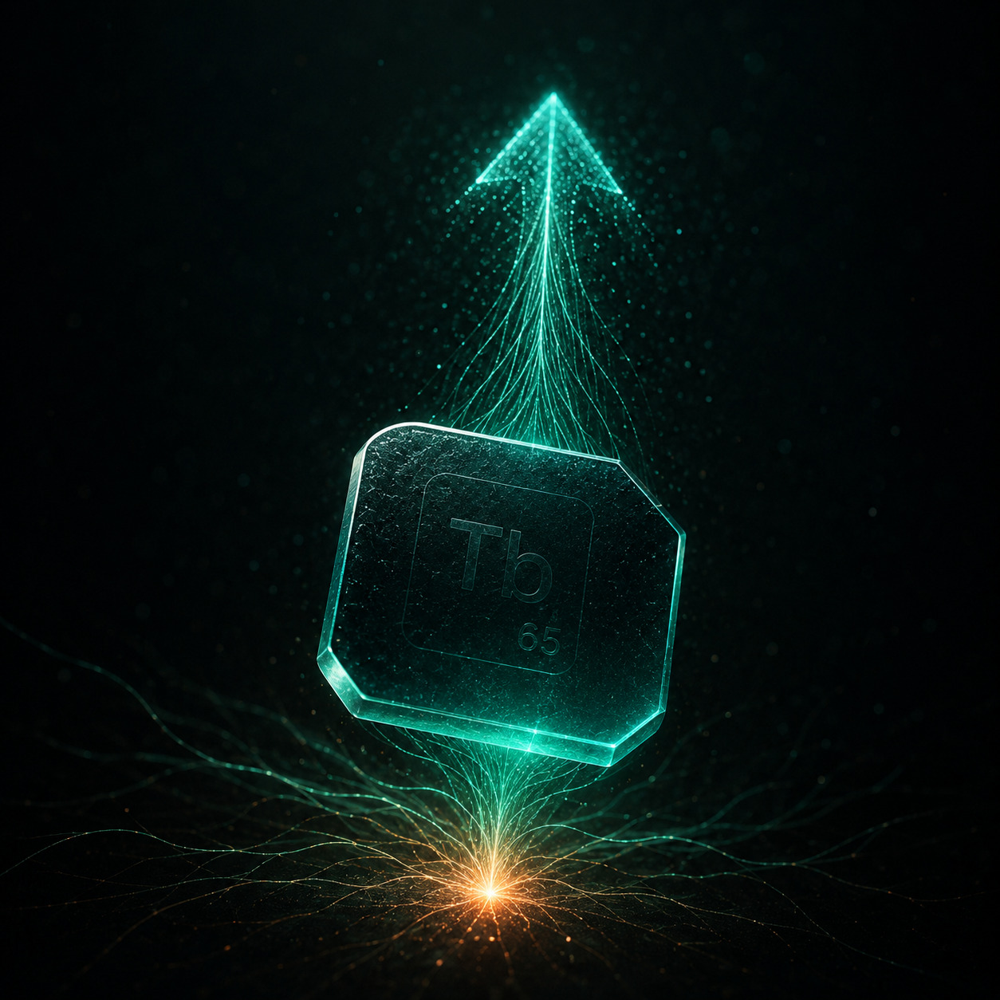
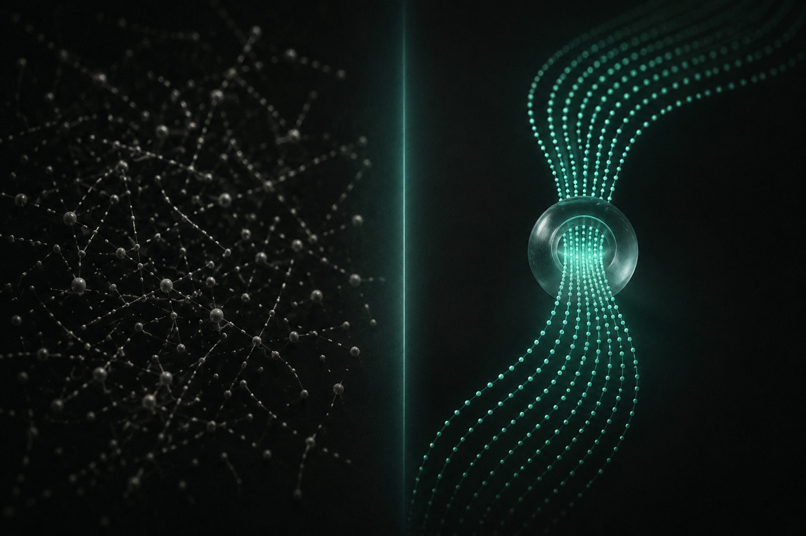

Тонете в текучке
«Телефон разрывается весь день, а вечером не вспомнить, кто писал и кому ты не ответил.»
→ Заявки падают в одно окно и не теряются. Настройку берём на себя, от вас 15 минут и доступы.
Приводим заявки и показываем цену каждой на дашборде с первого дня. Вы видите, за что платите, и останавливаетесь, когда захотите.

Реклама крутится, но какой рубль сработал, а какой сгорел, вы не знаете.
Заявки где-то теряются: человек написал и не дождался ответа.
Отчёт от подрядчика есть, а новых клиентов и понимания цифр - нет.
входящих заявок теряется, если их некому быстро обработать
Источник: KT-Team, 2024селлеров ушли с маркетплейсов за 2025 год
Источник: Sellmonitor, 2025«Телефон разрывается весь день, а вечером не вспомнить, кто писал и кому ты не ответил.»
→ Заявки падают в одно окно и не теряются. Настройку берём на себя, от вас 15 минут и доступы.
«Заплатил за рекламу, получил PDF на двадцать слайдов и ноль новых клиентов.»
→ Вместо слайдов дашборд: цена каждой заявки видна с первого дня. Не нравятся цифры - останавливаемся.
«Бюджет на старт один, и слить его в трубу страшно до дрожи.»
→ Начинаем с бесплатного аудита и одной связки на малых деньгах. Сначала проверяем, потом вкладываем.
«Заявок вроде хватает, а выручка стоит, и где именно теряю - не понимаю.»
→ Дашборд показывает, на каком шаге воронки утекают клиенты. Латаем дырку, а не льём сверху ещё бюджет.
«Отдал площадке комиссию, а клиент так и остался её, не моим.»
→ Строим поток в ваши каналы: квиз, база, карты, отзывы. Клиент приходит к вам и остаётся вашим.
Не узнали себя?
Три цифры, без единого термина. Сколько пришло заявок, во сколько обошлась каждая и сколько денег они принесли. Решения принимаете по числам, а не по ощущениям.

Иллюстрация механики «до и после». Не обещание конкретных цифр - их вы увидите на своём дашборде.
Не абстрактный маркетинг, а готовые механизмы под конкретную задачу. Каждый решает одну проблему и понятен без терминов.
Короткий тест вместо скучной формы. Вовлекает человека из рекламы и превращает в заявку, которая сразу падает вам.
Даём человеку пользу бесплатно, а дальше цепочка сообщений мягко доводит его до покупки. Без звонков в лоб.
Наводим порядок в Яндекс Картах и 2ГИС, запускаем сбор отзывов. Вас находят рядом и выбирают. Этот трафик не надо докупать.
Поднимаем старых клиентов и зависшие заявки, возвращаем часть в покупку. Это дешевле новой рекламы: эти люди уже вас знают.

15 минут в Telegram. Показываем, где именно вы теряете заявки и деньги. Ничего не продаём - решаете сами.
Берём одну задачу и запускаем на небольшом бюджете. Проверяем на деле, прежде чем вкладывать больше.
Цена заявки и выручка - перед глазами с первого дня. Без веры на слово, всё в цифрах.
Усиливаем работающее, отключаем лишнее. Не устраивают цифры - останавливаемся. Связки остаются у вас.
Громких кейсов с именами у нас пока нет, и мы говорим это прямо. Поэтому вы заходите на пилотных ценах и без обязательств: рискуете меньше, а внимания получаете больше, чем у загруженного агентства.
Цену заявки и всю воронку видите на дашборде с первого дня. Не сошлись цифры - выходите в любой момент, без годовых контрактов.
Начинаете с аудита за 0 ₽ и одной связки на малом бюджете. Сначала проверяем, потом масштабируем.
Не можем показать, откуда взяли число - не пишем его. Проверяемость вместо обещаний.
Оставьте контакт - пришлём разбор вашего маркетинга. На аудите ничего не продаём: покажем, где утекают заявки, а работать дальше или нет, решите вы.
Спасибо. Мы свяжемся в течение рабочего дня. Хотите быстрее - напишите прямо в бот @turbium_bot.